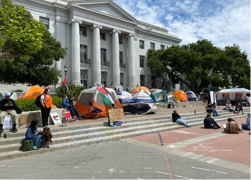
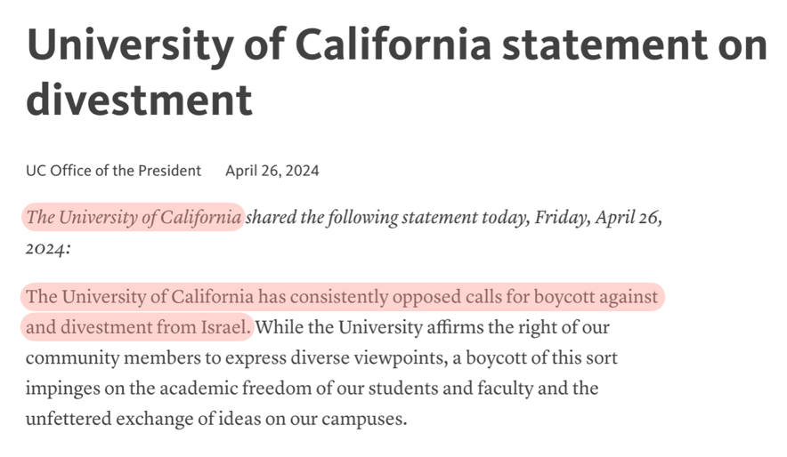
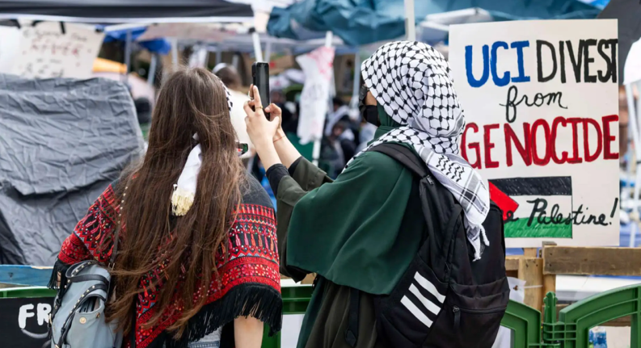

Overview
Beginning in spring 2024, UC students launched encampments and protests to divest from firms with ties to the Israeli military occupation of Palestine
Still an ongoing event, with for and against responses from the UC throughout.
The Demand
-
Beginning in spring 2024, students across UC campuses launched encampments and
protests demanding the university divest from companies with ties to weapons
manufacturers and firms profiting from the Israeli military occupation of Palestine.
-
The demands were rooted in a fundamental moral argument: if the university profits
from suffering, it is complicit in that suffering.
-
Students organized system-wide, building coalitions of undergraduates, graduate
workers, faculty, and alumni across all ten UC campuses.

UC Berkeley student-organized event connected to Palestine solidarity organizing.
The University's Response
-
On April 26, 2024 — the day after the Palestine solidarity encampment began at UCLA
— the UC Office of the President released a statement declaring it has
"consistently opposed calls for boycott against and divestment from Israel."
-
At a May 2024 Board of Regents meeting, Chief Investment Officer Jagdeep Singh
Bachher laid out the $32 billion in targeted holdings — and then broadened the
scope to include U.S. Treasury bonds, noting that because the U.S. government
itself sends aid and weapons to Israel, full divestment from Israel-linked assets
would be practically impossible.
-
The university made no plans to divest, despite growing encampments at UCLA,
Berkeley, UCSD, and other campuses.

UC public statement addressing calls for Israel-related divestment.
Voices of Support — and Suppression
-
At UC Berkeley, Chancellor Carol Christ took a different approach from the central
administration, negotiating directly with the Berkeley Divest Coalition and
reaching an agreement that included opening an investigation into whether
Berkeley's foundation and endowment funds were invested in companies complicit in
serious human rights violations.
-
The Berkeley Faculty Association challenged the UC's claim to institutional
neutrality, arguing the Regents were taking a political stance by criminalizing
protest while continuing investments in companies profiting from war.
-
But in July 2025, UC President Michael Drake moved in the opposite direction,
announcing that student governments across all UC campuses are banned from
anti-Israel boycotts — a directive that followed federal pressure from the NSF and
NIH threatening to withhold grants from institutions associated with such boycotts.
Where Things Stand
-
Unlike some past UC student movements, the Palestine solidarity divestment campaign
has not achieved its central demand — the university has not divested, and
institutional resistance has only hardened over time.
-
The Board of Regents — an unelected body controlling $175 billion in funds — has
shown no willingness to revisit its position, and the 2025 boycott ban represents
an active effort to shut down the conversation entirely.
-
Yet the movement has still forced important outcomes: greater transparency about
where UC invests its money, campus-level investigations, and a broader public
reckoning with the question of whether universities bear moral responsibility for
the consequences of their investments.
-
For the students who built encampments, faced arrest, and organized across ten
campuses, the failure to secure divestment is not the end — it is a reminder that
institutional change is slow, resistance is fierce, and the fight for
accountability does not end with a single demand.

UC Irvine encampment and solidarity protest activity.
References
← Back to timeline